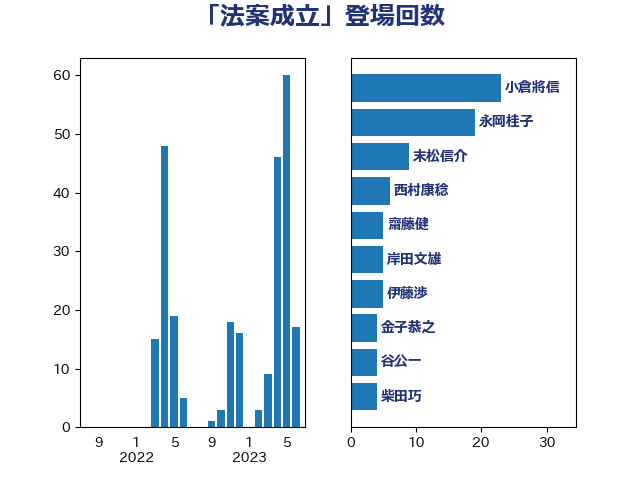

単語「法案成立」

| 小倉將信 | 自由民主党 | 23 回 |
| 永岡桂子 | 自由民主党 | 19 回 |
| 末松信介 | 自由民主党 | 9 回 |
| 西村康稔 | 自由民主党 | 6 回 |
| 齋藤健 | 自由民主党 | 5 回 |
| 岸田文雄 | 自由民主党 | 5 回 |
| 伊藤渉 | 公明党 | 5 回 |
| 金子恭之 | 自由民主党 | 4 回 |
| 谷公一 | 自由民主党 | 4 回 |
| 柴田巧 | 日本維新の会 | 4 回 |
| 本庄知史 | 立憲民主党 | 4 回 |
| 小林鷹之 | 自由民主党 | 4 回 |
| 舩後靖彦 | れいわ新選組 | 3 回 |
| 河野太郎 | 自由民主党 | 3 回 |
| 音喜多駿 | 日本維新の会 | 2 回 |
| 鎌田さゆり | 立憲民主党 | 2 回 |
| 野田聖子 | 自由民主党 | 2 回 |
| 足立康史 | 日本維新の会 | 2 回 |
| 萩生田光一 | 自由民主党 | 2 回 |
| 簗和生 | 自由民主党 | 2 回 |
| 秋野公造 | 公明党 | 2 回 |
| 礒崎哲史 | 国民民主党 | 2 回 |
| 浅田均 | 日本維新の会 | 2 回 |
| 沢田良 | 日本維新の会 | 2 回 |
| 松野博一 | 自由民主党 | 2 回 |
| 東徹 | 日本維新の会 | 2 回 |
| 杉尾秀哉 | 立憲民主党 | 2 回 |
| 打越さく良 | 立憲民主党 | 2 回 |
| 後藤茂之 | 自由民主党 | 2 回 |
| 庄子賢一 | 公明党 | 2 回 |
| 岩谷良平 | 日本維新の会 | 2 回 |
| 山田太郎 | 自由民主党 | 2 回 |
| 大口善徳 | 公明党 | 2 回 |
| 塩田博昭 | 公明党 | 2 回 |
| 國重徹 | 公明党 | 2 回 |
| 吉良よし子 | 日本共産党 | 2 回 |
| 仁比聡平 | 日本共産党 | 2 回 |
| 上田清司 | 国民民主党 | 2 回 |
| 高木かおり | 日本維新の会 | 1 回 |
| 馬淵澄夫 | 立憲民主党 | 1 回 |
| 青柳仁士 | 日本維新の会 | 1 回 |
| 階猛 | 立憲民主党 | 1 回 |
| 阿部司 | 日本維新の会 | 1 回 |
| 藤井一博 | 自由民主党 | 1 回 |
| 若松謙維 | 公明党 | 1 回 |
| 芳賀道也 | 国民民主党 | 1 回 |
| 緒方林太郎 | 無所属 | 1 回 |
| 米山隆一 | 立憲民主党 | 1 回 |
| 笠井亮 | 日本共産党 | 1 回 |
| 竹谷とし子 | 公明党 | 1 回 |
| 石垣のりこ | 立憲民主党 | 1 回 |
| 田村貴昭 | 日本共産党 | 1 回 |
| 牧山ひろえ | 立憲民主党 | 1 回 |
| 渡辺周 | 立憲民主党 | 1 回 |
| 浦野靖人 | 日本維新の会 | 1 回 |
| 浜田聡 | NHK党 | 1 回 |
| 河野義博 | 公明党 | 1 回 |
| 森山浩行 | 立憲民主党 | 1 回 |
| 梅谷守 | 立憲民主党 | 1 回 |
| 柚木道義 | 立憲民主党 | 1 回 |
| 松本剛明 | 自由民主党 | 1 回 |
| 杉久武 | 公明党 | 1 回 |
| 新妻秀規 | 公明党 | 1 回 |
| 斉藤鉄夫 | 公明党 | 1 回 |
| 手塚仁雄 | 立憲民主党 | 1 回 |
| 後藤祐一 | 立憲民主党 | 1 回 |
| 岸真紀子 | 立憲民主党 | 1 回 |
| 山谷えり子 | 自由民主党 | 1 回 |
| 小沼巧 | 立憲民主党 | 1 回 |
| 宮路拓馬 | 自由民主党 | 1 回 |
| 天畠大輔 | れいわ新選組 | 1 回 |
| 大岡敏孝 | 自由民主党 | 1 回 |
| 吉田統彦 | 立憲民主党 | 1 回 |
| 吉田久美子 | 公明党 | 1 回 |
| 古屋範子 | 公明党 | 1 回 |
| 北側一雄 | 公明党 | 1 回 |
| 加藤勝信 | 自由民主党 | 1 回 |
| 佐々木さやか | 公明党 | 1 回 |
| 中西祐介 | 自由民主党 | 1 回 |
| 中田宏 | 自由民主党 | 1 回 |
| 三浦信祐 | 公明党 | 1 回 |
| たがや亮 | れいわ新選組 | 1 回 |